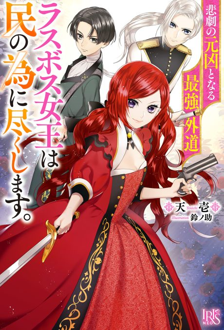

The Most Heretical Last Boss Queen: From Villainess to Savior
悲劇の元凶となる最強外道ラスボス女王は民の為に尽くします。
A girl reincarnated as the villainous queen of a dating game decides to use her power to save everyone instead.
We haven't found where the anime ends in the light novel yet.
6.9AniList score
—Animeter, no votes yet
24episodes, 2 seasons
Rate it or report where you stopped
2 seasons, 24 episodes
In airing order. Episode numbers on this site count straight through every season, so season 2 starts at episode 13.
1
2023 · TV
The Most Heretical Last Boss Queen: From Villainess to Savior
Episodes1–1212 ep
2
2026 · TV
The Most Heretical Last Boss Queen: From Villainess to Savior Season 2
Episodes13–2412 ep
Sources: AniList
More like The Most Heretical Last Boss Queen: From Villainess to Savior
 Unclear7.3
Unclear7.3
 Manga Vol. 27.3
Manga Vol. 27.3
 Manga Vol. 27.2
Manga Vol. 27.2
 Manga Vol. 37.1
Manga Vol. 37.1
 Unclear7.7
Unclear7.7
 Done7.3
Done7.3
 Original7.7
Original7.7
 Done8.1
Done8.1
 Done8.2
Done8.2
 Film8.3
Film8.3
 Manga Ch. 407.7
Manga Ch. 407.7
 Manga Vol. 27.1
Manga Vol. 27.1